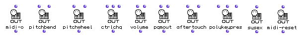
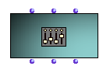

OpenMusic DocumentationHiérarchie de section : OM 6.6 User Manual > MIDI > Rendering and Playback > MIDI Player Controls
OpenMusic DocumentationHiérarchie de section : OM 6.6 User Manual > MIDI > Rendering and Playback > MIDI Player Controls
Navigation : page précédente | page suivante
Attention, votre navigateur ne supporte pas le javascript ou celui-ci à été désactivé. Certaines fonctionnalités de ce guide sont restreintes.
MIDI Player Controls
In addition to playing notes, several other types of playback control commands can be sent to a MIDI synthesizer. For instance : changing the timbre (or "program") for a given channel, changing the volume, etc.
All such MIDI control events are also generally sent for a specific channel. There exist several ways to send them in OM.
The "MIDI Send" Boxes
The functions of the MIDI/MIDI Send menu send events to the MIDI player when they are evaluated.
Typically, such evaluation will modify the state of the MIDI devices or synthesizers connected to a given port (and often for a given channel).

One of the input of the "MIDI Send" boxes is the MIDI channel (or list of channels) on which the event will be sent.
Another optionnal input is the MIDI port. If no port is specified, the event are sent to the default MIDI port.
midi-o : General output function. Sends raw input data to a given port.
pitchbend/pitchwheel : Send PitchBend events (Change tuning of MIDI instrument)
Pitchweel use 14 bits precision (-8192 to 8191) ;
PitchBend use 7 bits precision (-64 to 63)
ctrlchg : Sends control change events.
Parameters of a Control Change event are a controller number and a value (0-127). For example (10 64) stands for "set controller 10 (pan) to 64 (middle)".
volume : Sends volume event with a volume value.
Note : volume is a particular Control Change event (controller number 7)
pgmout : Sends Program Change events with a program number (0 - 127)
Used to set instrumental timbre to be applyed to the different MIDI channels.
aftertouch : sends a channel pressure event with pressure value.
polykeypres : sends a key pressure event with pressure and pitch values.
sysex : Sends a system exclusive message.
midi-reset : Resets default MIDI settings
Selecting Values for MIDI Events
The "selection" utilities provided in OM may make the use of the "MIDI Send" boxes easier...
MIDI Select Utilities
The Midi-Mix-Console
The MIDI-MIX-CONSOLE is a special object allowing to send control messages to MIDI channels through a graphic editor similar to a standard multi-channel mixing console.
Messages can be sent to control, for instance, the volume, pan, instrument (timbre), pitch bend or any other MIDI control, for a given number of channels.
{kind=link}
The MIDI-MIX-CONSOLE Box
The MIDI-MIX-CONSOLE object has two main insitialization parameters :
Specific control and messages is done exclusively via the graphical interface. |

|
Sending controls
Every move or manipulation in the MIDI-MIX-CONSOLE interface immediately triggers MIDI messages.
Alternatively, the MIDI-MIX-CONSOLE can be considered as a "standard" musical object , and therefore be "played" using the standard playback controls in the patch or maquette editors (see below).
Playing MIDI Objects
All MIDI objects created in OM can be "played". Playing these objects will not necessarily sound, but yet sends corresponding MIDI events and therefore possibly modifies some (sounding or not) MIDI parameters.
Playing an object occurs in the patches using playback shortcuts, or in the maquettes when the playing cursor reaches a given object.
More about MIDI Objects
How to "Play" the Boxes
Références :
Plan :
Navigation : page précédente | page suivante
A propos...(c) Ircam - Centre Pompidou